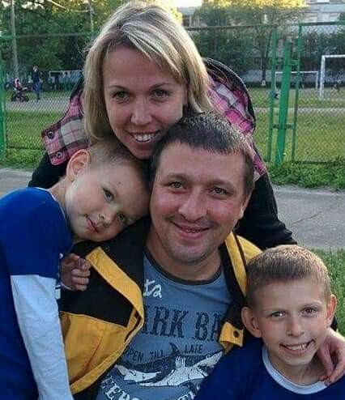
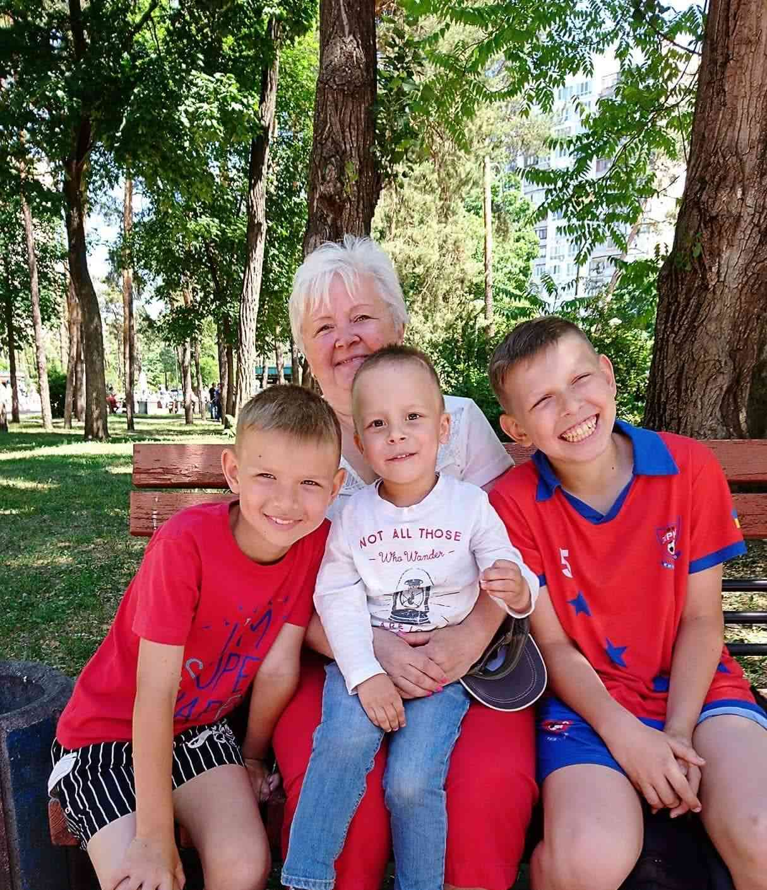

My family


My famile consists of me, my wife , called Zoya, and two sons, Tolya 14 years old and Sasha 11 years old
My wife is a cook, she works in pizzeria. My sons study at school.
They are fond of football and they have training almost every day. They attend football club Chaika (Seagull). Of course, I am a big fan of them and I can say it is my another hobby.
I have a mother and a sister. My mother is a pensioneer. She doesn't work because shetakes care about her youngest grandson, my nephew and the son of my sister. Unfortunatly my father died several years ago.